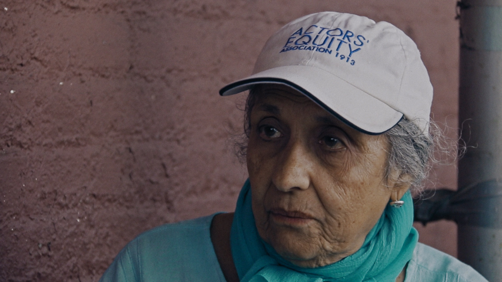
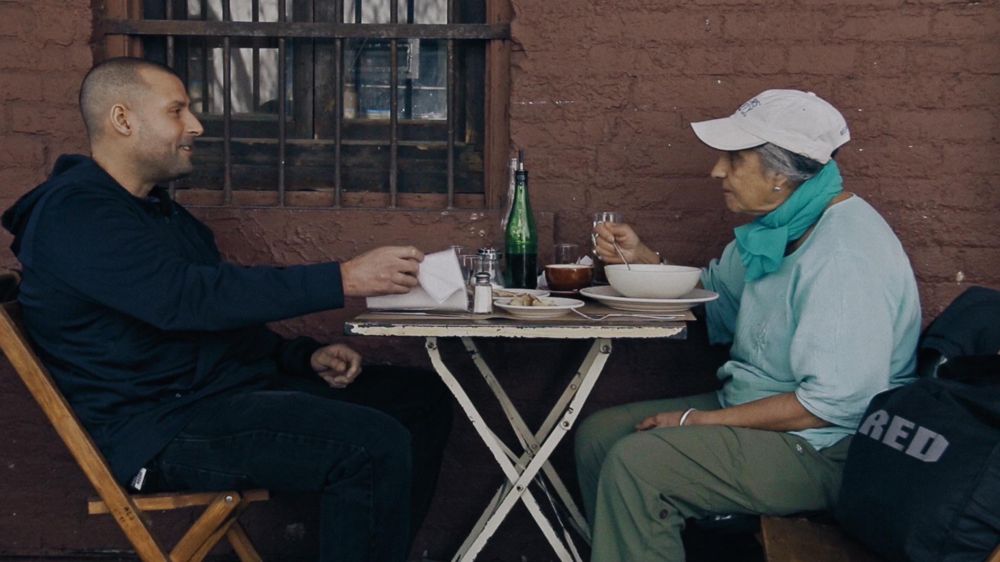
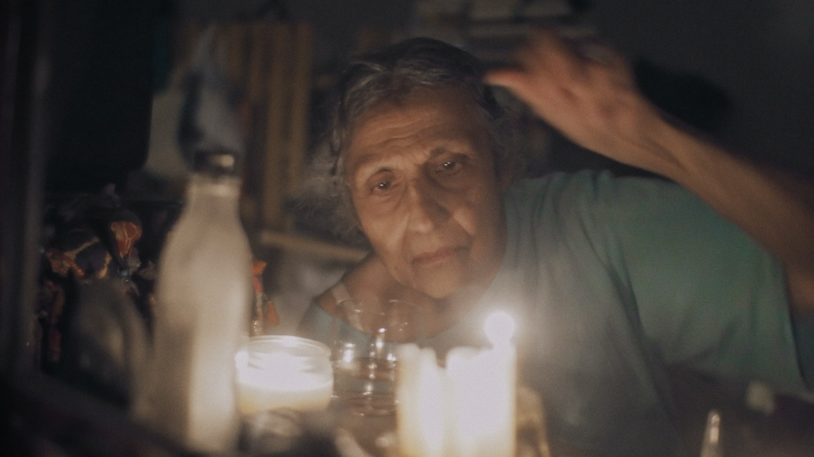
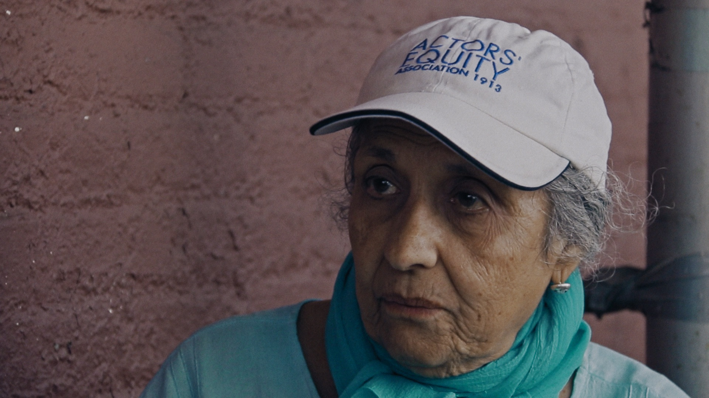
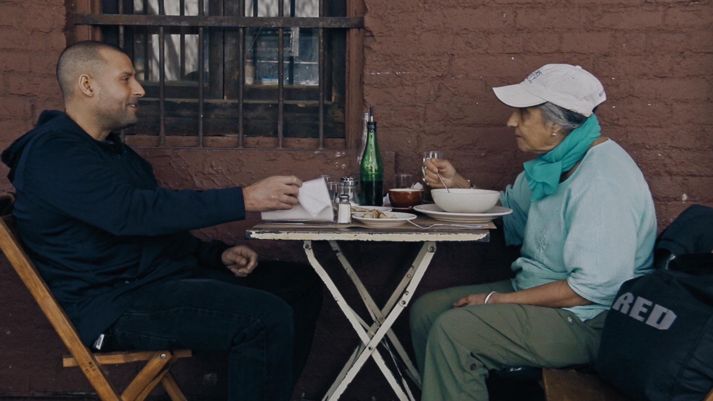
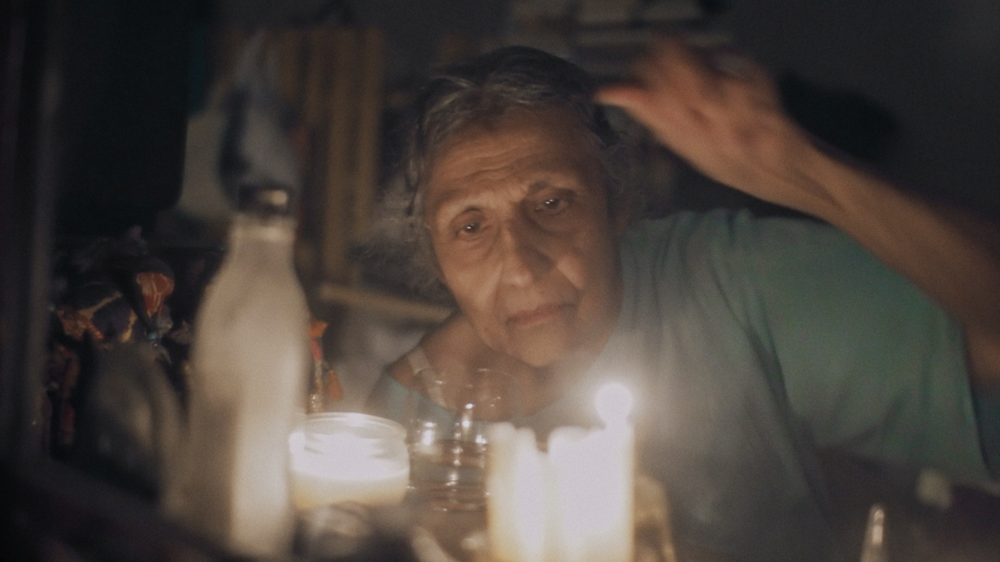

Director
Matiss Kaza
Writer
Matiss Kaza
Producers
Una Celma, Matiss Kaza, David Scherker, Reid Hannaford
Cinematographers
Aleksandrs Grebnevs, Noah Weisfogel
Music
Martins Brauns
Editor
Gunta Ikere
Sound
Aleksandrs Vaicahovskis
One Ticket Please (2017)
documentary, Latvia/USA, 65'
A 78-year-old Indian woman in New York is the world’s most passionate theatergoer. Nicki Cochrane been going to at least one play every day for more than 25 years, acquiring free tickets using a variety of ingenious means. Nicki prides herself with a staunch dedication to the art. But at what point does passion turn into addiction?
Festivals: Goteborg, Tempo, Krakow, Beldocs, Kerala, Winter Film Awards
Awards: NewDoc (Tempo), New York Perspective (WFA 2018), FIPRESCI Award (Lielais Kristaps 2017)
scroll for more >